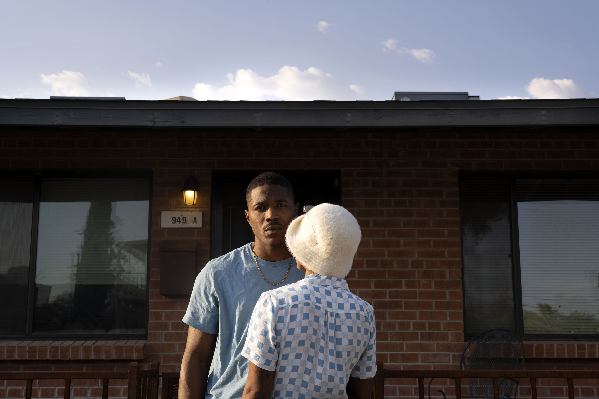

LaRissa Rogers
Hea-Mi Kim
Kennady Schneider

Amina Cruz
Sydney Acosta
DISCIPLINE
GALLERIES
ARTISTS
![“A Poetic of Living” is a soil installation spanning the distance of the two furthest walls of the space. The soil is positioned in a large rectangle and sourced from Pen Park and Farmington Country Club in Virginia. The soil is eight inches thick off the floor. There are four standing grow lights, one on each corner lighting the soil. Buried in the soil are five bodies evenly spaced in a row and made of soil. From the bodies, celosia and grass are growing. Busts growing vegetation and fungus are also placed in the soil. The soil installation has to be walked over to enter the space.](images/LaRissaRogers_WelcomeGallery-3726.jpg)